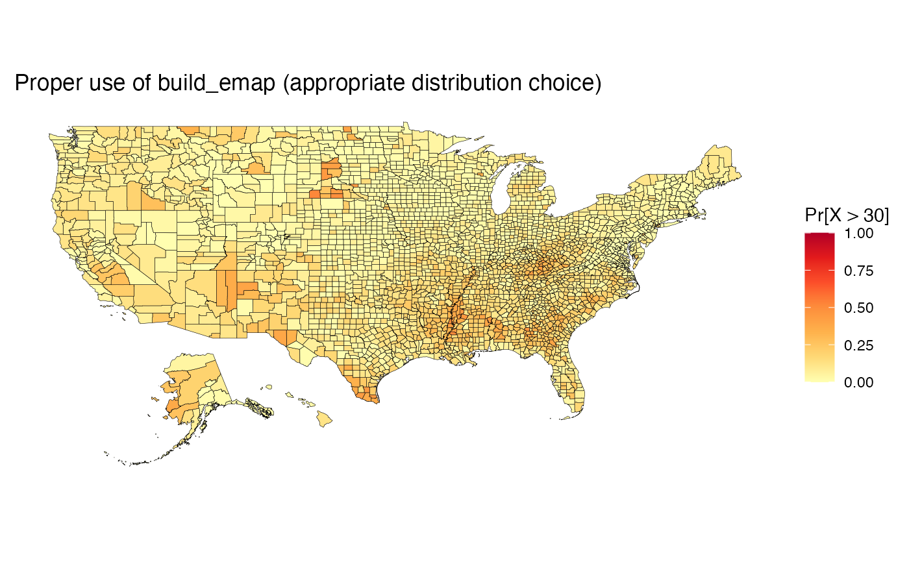
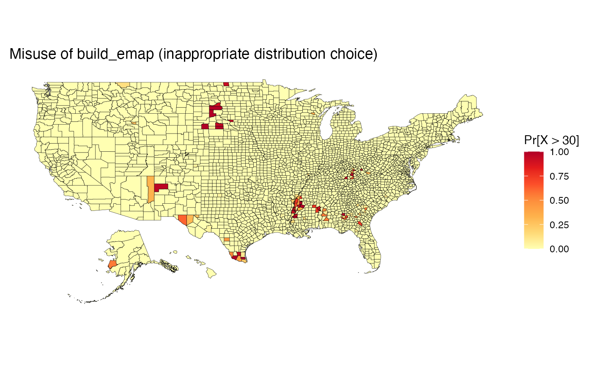
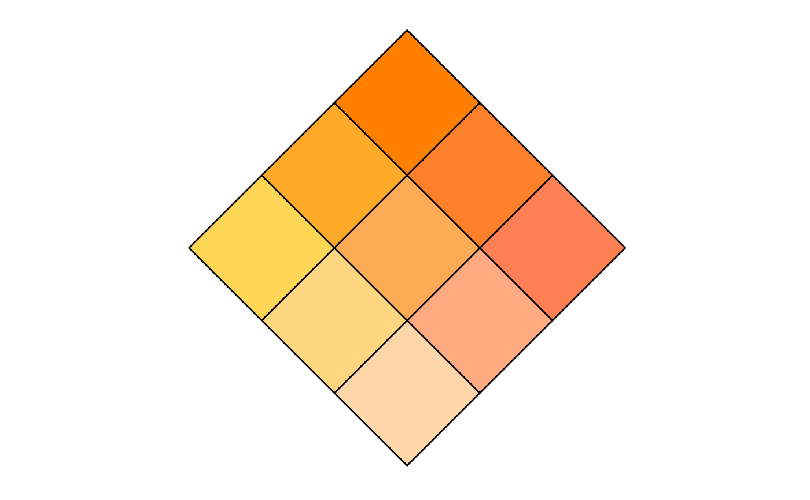
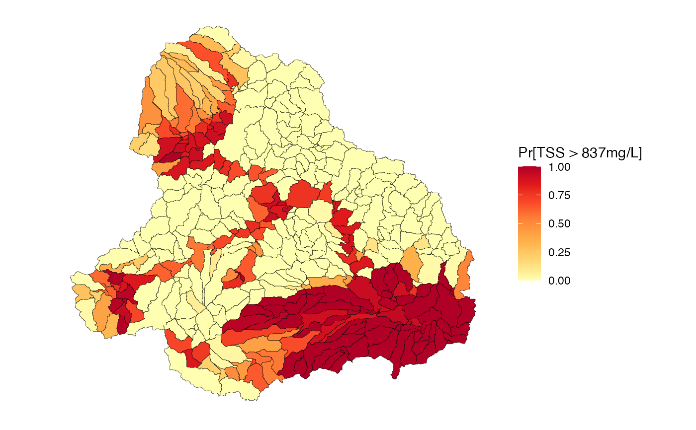

This function builds a map that visualises the probability of exceeding some nominated threshold of concern.
build_emap(
data,
pdflist = NULL,
geoData = NULL,
id = NULL,
key_label,
palette = "YlOrRd",
size = NULL,
border = NULL
)A data frame containing columns that house estimates of the mean, standard deviation (or margin of error) and exceedance probability (optional). A number of options are considered for calculating the probability of exceeding a threshold. See below for more information.
A list capturing the pdf function that defines the distribution function to use to
calculate the probabilities of exeedence. By default this is NULL and assumes
the exceedance probabilities have been calculated outside of the function and passed
as a third column of the data dataframe. Functions need to conform to the class
of distribution functions available within R through the stats package.
A spatial polygons data frame.
Name of the common column shared by the objects passed to
data and geoData. The exceedance probability in the data frame
will be matched to the geographical regions of the spatial polygons data
frame through this column.
Label of legend.
Name of colour palette. Colour palette names include
"YlOrBr", "YlOrRd", "YlGnBu" and "PuBuGn".
An integer between 1 and 20. Value controls the size of points
when geoData = NULL. If size = NULL, the points will remain
the default size.
@details An exceedance probability map can be produced using:
(i) precalculated exceedance probabilities, which are provided as a third column
to the input dataframe; or
(ii) exceedance probabilities that are calculated within the function using one of
the standard probability distributions (e.g. pnorm) provided in the stats
package in R, or
(iii) exceedance probabilities that are calculated through a user defined function that
is passed to the package which conforms to a similar structure as the suite of
Distributions available in R. Examples are provided below.
Name of geographical borders to be added to the map. It must be
one of county, france,
italy, nz,
state, usa or
world (see documentation for
map_data for more information). The borders will be
refined to match latitute and longtidue coordinates provided in the data
frame or spatial polygons data frame.
If geoData remains NULL, the function will produce a map of
plotted points representing specific sites; in this case, the data frame must
include latitude and longitude coordinates in columns "long" and
"lat".
data(us_data)
data(us_geo)
poverty <- read.uv(data = us_data, estimate = "pov_rate", error = "pov_moe")
# Exceedance probability map: Pr[X > 30] (Exponential Distribution)
#---- define probability distribution
pd <- quote({ pexp(q, rate, lower.tail = FALSE) })
#---- define argument listing
args <- quote({ list(rate = 1/estimate) })
#---- capture distribution and arguments in a single list
pdflist <- list(dist = pd, args = args, th = 30)
map <- build_emap(data = poverty, pdflist = pdflist, geoData = us_geo, id = "GEO_ID",
border = "state", key_label = "Pr[X > 30]")
#> Warning: Ensure the pdf you select is suitable for your data. See ??build_emap for examples of good and bad distribution choices.
view(map) + ggplot2::ggtitle("Proper use of build_emap (appropriate distribution choice)")

# Example where an inappropriate distributions is tried
# Exceedance probability map: Pr[X>30] (Normal Distribution)
#---- define probability distribution
pd <- quote({ pnorm(q, mean, sd, lower.tail = FALSE) })
#---- define argument listing
args <- quote({ list(mean = estimate, sd = error/1.645) })
#---- capture distribution and arguments in a single list
pdflist <- list(dist = pd, args = args, th = 30)
map <- build_emap(data = poverty, pdflist = pdflist, geoData = us_geo, id = "GEO_ID",
border = "state", key_label = "Pr[X > 30]")
#> Warning: Ensure the pdf you select is suitable for your data. See ??build_emap for examples of good and bad distribution choices.
view(map) + ggplot2::ggtitle("Misuse of build_emap (inappropriate distribution choice)")

# Example where exceedance probabilities have been supplied (GBR Example)
# Load Upper Burdekin Data
data(UB)
# Build Palette
exc_pal <- build_palette(name = "usr", colrange = list(colour = c("yellow", "red"),
difC = c(1, 1)))
view(exc_pal)

# Create map and view it
tss <- read.uv(data = UB_tss, estimate = "TSS", error = "TSS Error", exceedance = "TSS_exc1")
map <- build_emap(data = tss, geoData = UB_shp, id = "scID",
key_label = "Pr[TSS > 837mg/L]")
view(map)
